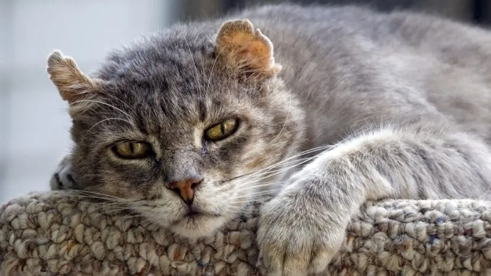
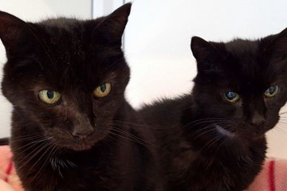

HUELLITAS

En nuestro refugio, encontrarás a Lobo, un perrito tranquilo con años de vida y amor para dar. Espera pacientemente encontrar un hogar donde pueda disfrutar de sus años dorados con cariño y cuidado.

En uno de los rincones de nuestro refugio, vive Luna, una gatita que ha sobrevivido al maltrato. Sus ojos reflejan cautela, pero su corazón anhela encontrar un hogar donde pueda sanar y recibir el amor que tanto necesita.

En nuestro refugio, Pinto y Manchas son dos gatitos inseparables que han compartido cada momento de su vida juntos. Su adopción debe ser conjunta, pues su vínculo es tan fuerte que separarlos sería romper parte de sus corazones. Esperan encontrar un hogar donde puedan seguir siendo inseparables y brindar doble amor y compañía.